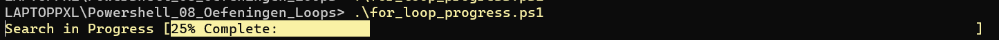
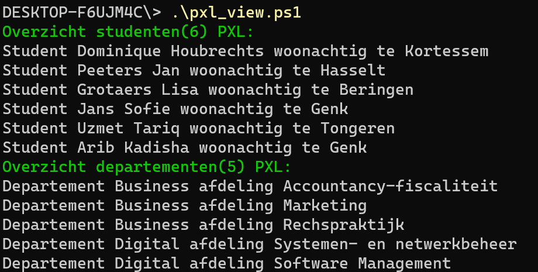
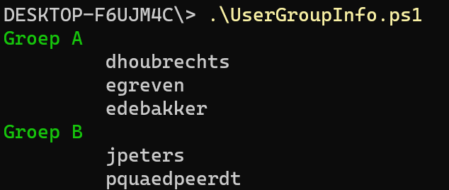

1. Voortgang — for_loop_progress.ps1
Maak met een for-lus een voortgangsbalk van 1 tot en met 100 procent. Gebruik Write-Progress; een korte Start-Sleep mag werk simuleren. Sluit de balk na afloop af.

Mijn antwoord:
2. Excel doorlopen — pxl_view.ps1
Lees example_files/pxl_data.xlsx met de module ImportExcel.
- Lees werkbladen
StudentenenDepartementen. - Toon boven elk overzicht het aantal rijen.
- Toon per student voornaam, naam en woonplaats.
- Toon per departement naam en richting.
- Geef een bruikbare fout wanneer module of bestand ontbreekt.

Mijn antwoord:
3. Mapinformatie — DirectoriesInfo.ps1
Doorloop met foreach de mappen C:\Windows, C:\Program Files en C:\powershell. Toon voor iedere bestaande map naam, aanmaakdatum en attributen. Maak de lengte van de onderstreping met een geneste for-lus. Meld ontbrekende mappen zonder te stoppen.

Mijn antwoord:
4. Groepen uit CSV — UserGroupInfo.ps1
Importeer example_files/usergroup.csv en toon eerst alle gebruikers uit GPA, daarna alle gebruikers uit GPB. Gebruik foreach en if; schrijf geen afzonderlijke vaste gebruikersnamen in je code.

Mijn antwoord:
Eindcontrole
- De vier scripts gebruiken de twee meegeleverde bestanden uit
example_files/. - Lege verzamelingen en ontbrekende bestanden zijn afgehandeld.
- De resultaten en testcommando's staan in
answers.md. - Alle scripts parsen zonder syntaxfouten en wijzigingen zijn gepusht.